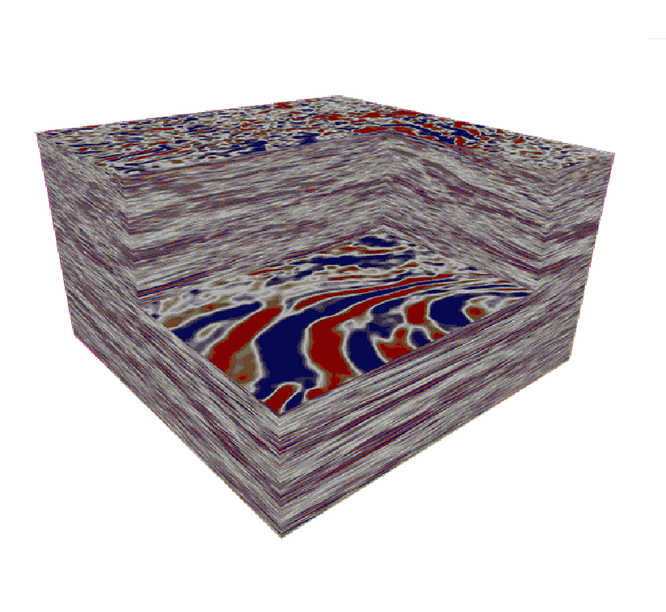
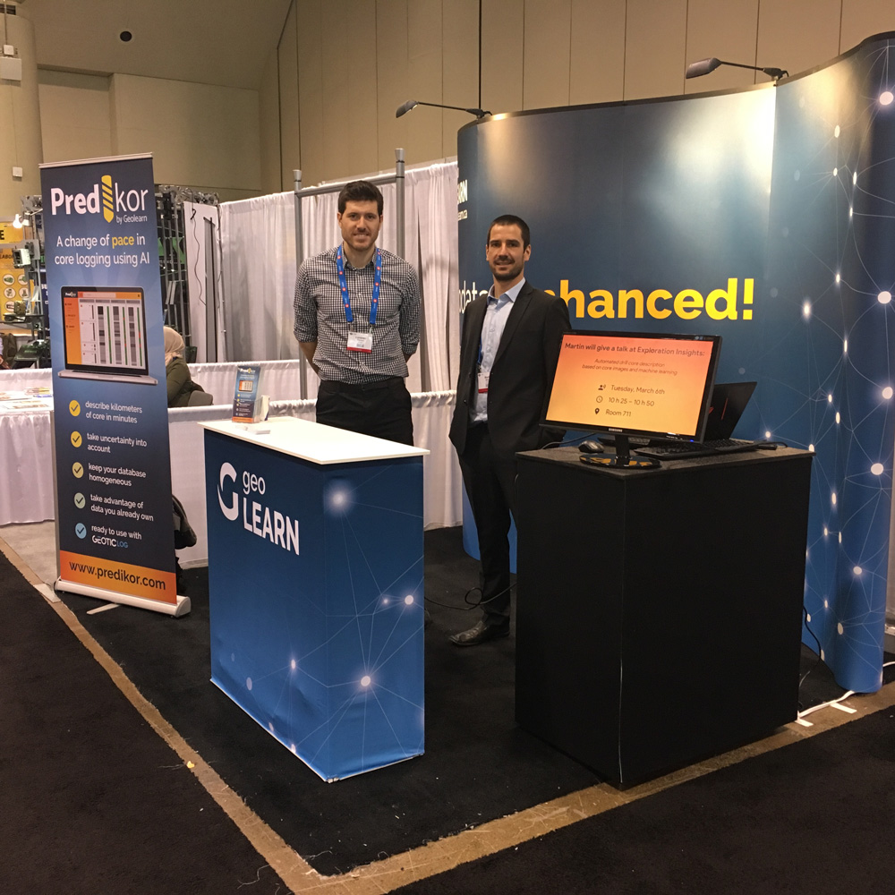

Notre offre
Analyses de données
intelligentes
Geolearn utilise des technologies de valorisation des données d'avant-garde, comme l'apprentissage superficiel et profond (deep learning) de même que les géostatistiques, pour trouver les modèles cachés dans vos données qui vous permettront de résoudre les problématiques de vos projets en géosciences.
Visualisation
de données
Nous offrons des solutions connectées, interactives et portables pour visualiser de manière efficace, compréhensible et esthétique votre contenu à partir de prédictions ou de données brutes.
Solutions logicielles et
stockage de données
Nous produisons des solutions logicielles sur mesure pour le stockage, le traitement et l'interprétation de données incluant, au besoin, des bases de données relationnelles et des interfaces de visualisations interactives.
Démocratisation
du savoir
Vous avez des besoins de formation en apprentissage automatique, en géostatistiques ou en programmation python appliquée aux géosciences? Nous pouvons y répondre, que ce soit par le biais de formations ou d'ateliers adaptées à vos besoins.
Nos Réalisations
- 
-

-

-

Analyse de données sismiques
Classification automatique de faciès, clustering 2D/3D, interprétation automatique de failles/fractures et inversion stochastique bayésienne.
Analyse des diagraphies de forages
Prédiction de diagraphies, clustering et classification automatique des faciès.
Analyse d'images géophysique aéroportée
Augmentation de la résolution des cartes géophysiques aéroportées par IA et extraction des images d'intérêt par apprentissage profond.
Applications développés
Predikor (description automatique des images de carottes de forages), Unbox (linéarisation automatique des photos des forages)
À propos
Fondée en 2017 par des étudiants de l'INRS-ETE, Geolearn
a développé des routines uniques de traitement de données et
d'analyse d'images dans le domaine des géosciences. Considéré
comme un chef de file en matière d'innovation, Geolearn a lancé
Predikor en 2018 et a organisé plusieurs ateliers Machine Learning à travers le Canada.
En 2022, Geolearn rejoint l'entreprise Géostack pour continuer
le développement de nouvelles technologies et l'utilisation de
l'intelligence artificielle pour résoudre des problèmes en
géosciences.
